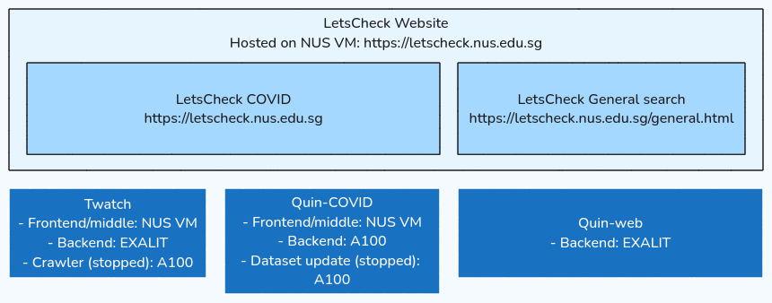

LetsCheck deployment overview

LetsCheck Website
The public-facing LetsCheck website is a static HTML site hosted on an NUS VM using an Apache web server.
The site features demos for two projects: LetsCheck COVID and LetsCheck General Search.
- LetsCheck COVID is the original fact-checking project, divided into three sections that handle different information sources: Twitter, news, and scientific articles. The first section, Twatch, processes and analyzes COVID-related Twitter data. The other two sections use Quin, a model designed to fact-check statements against datasets, in this case, COVID-related news and scientific articles.
- LetsCheck General Search is based on a modified version of the Quin-general model. It first conducts a general web search for the query, then uses the Quin model to fact-check the results from the search.
Twatch
Twatch offers a searchable archive of COVID-related claims circulating on X (formerly Twitter) from 2020 to 2023, along with visualizations showing their impact.
Twatch consists of the following components:
- Frontend: A web app built using the React library.
- Backend-API: For more details, see this page.
- Backend (Data): A Python script that retrieves data from the tweet database.
- Crawler: Downloads tweet data from the Panacea Lab dataset. This component is currently inactive as the dataset is no longer being updated.
Quin
Quin is a user-friendly framework designed for large-scale fact-checking and question answering. You can explore it on the Github repository. LetsCheck offers demos for two Quin models: Quin-COVID and Quin-web.
- Quin-COVID: Two separate Quin-COVID instances are deployed on a DGX A100 workstation. One instance is based on a dataset of news articles, while the other uses scientific articles from the COVID-19 Open Research Dataset.
- Quin-general: An upgraded version of Quin that supports general queries and conducts fact-checking using web search results.
- Quin-frontend: For more details, refer to this page.